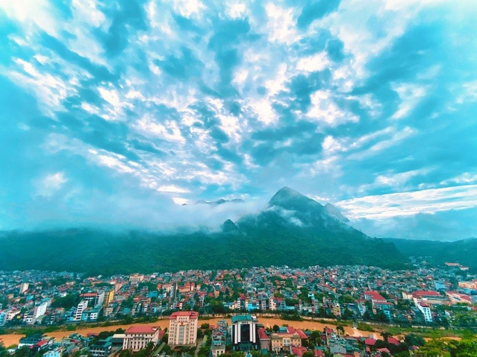
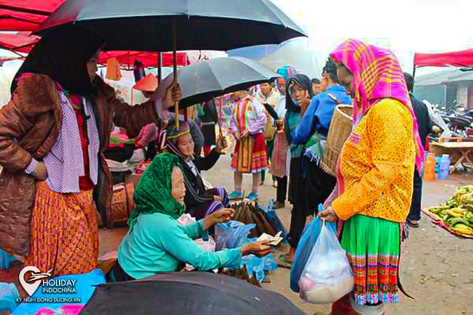
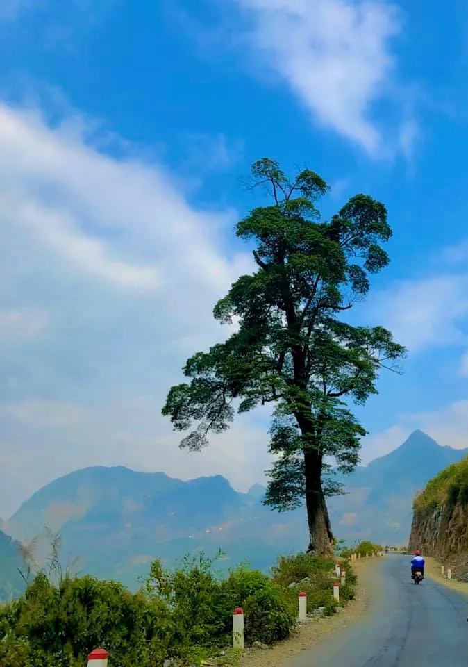
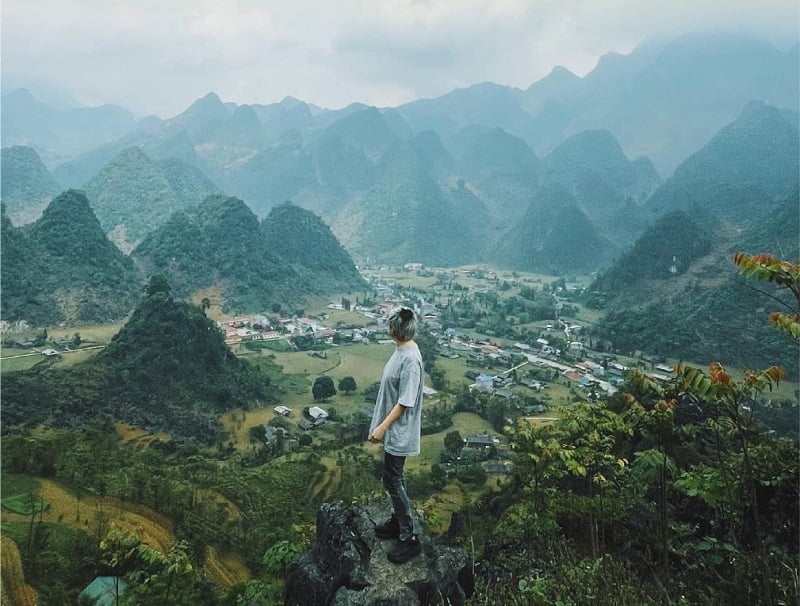

Tp Hà Giang
Cột mốc KM 0
-cột Km0 nằm ở trung tâm Thành phố Hà Giang
-Đây là mốc đánh dấu điểm khởi công của con đường Hạnh Phúc nối Tp Hà Giang và 4 huyện vùng cao nguyên đá. Đây cũng là điểm khởi đầu cho hành trình khám phá Hà Giang mà hầu hết du khách đều sẽ bắt gặp ở đây.

-Cấm Sơn chạy dài theo dốc Mã Tim với địa hình hiểm trở, hang sâu vách đá dựng đứng, như con sư tử với dáng oai vệ. Từ trên đỉnh, Cấm Sơn chạy về phía sông Lô là núi đất, sườn núi vách dốc trải dài suốt từ đường 19/5 đến quảng trường 26/3. Dưới chân núi là những phố phường đông đúc dân cư, làm ăn sầm uất. Tuy nhiên, người dân Hà Giang ít ai thấy hết được vẻ đẹp tự nhiên mà huyền bí của Cấm Sơn vì chỉ có một con đường lên đỉnh núi. Trên đỉnh núi có một hang sâu thẳm, thẳng đứng như một cái “giếng trời”. Chính với địa thế hiểm trở và độc đáo này mà thực dân Pháp khi xâm lược đã chọn nơi đây làm chốt canh giữ chính. Theo truyền thuyết, khoảng những năm 1870 – 1875, địa hạt Hà Giang có đội quân cờ vàng của Hoàng Sùng Anh kéo đến để cướp bóc, bị đội quân của đồng bào các dân tộc là “quân cờ trắng” đánh trả quyết liệt, bao vây, truy kích. Năm 1875, quân cờ vàng của Hoàng Sùng Anh bị co cụm, chạy lên núi Cấm để cố thủ. Lương thực cạn kiệt dần, xung quanh núi Cấm lại bị bao vây chặt chẽ, biết không thể thoát, cả tướng lẫn quân cờ vàng nhảy xuống hang sâu trên núi tự tử.
-Với tấm lòng bao dung và nhân ái, nhân dân địa phương lập ngôi miếu nhỏ, cầu nguyện cho những linh hồn bất hạnh được siêu thoát. Núi trở thành nơi linh thiêng huyền bí hơn. Sau này, miếu ấy cũng không còn nữa, dân địa phương đã đưa về thờ tại “Cấm Sơn linh từ” (đền núi Cấm, nay là đền Mẫu). Trên đỉnh núi hiện vẫn còn vết tích của những hang đá sâu, hệ thống hầm hào, lô cốt của Pháp. Trong những năm gần đây, Hà Giang có chủ trương khai thác tiềm năng núi Cấm phục vụ cho việc phát triển kinh tế, văn hoá – xã hội. Núi Cấm đã được xây dựng tháp truyền hình lớn và một số thiết chế văn hóa du lịch. Từ dưới chân núi (cầu Yên Biên 2), ta có thể đi xe máy, ô tô đến lưng chừng núi. Tiếp tục đi bộ theo con đường bậc thang đổ bê tông ngoằn nghèo cạnh sườn núi, luồn lách qua những kẽ đá tai mèo dựng đứng, bên là vực sâu thăm thẳm với những dây song mây rậm rạp, du khách sẽ trở về ngược dòng thời gian, tìm thấy những dấu ấn lịch sử của Cấm Sơn.
Quản Bạ
Chợ Quyết Tiến
Trên chặng đầu tiên của con đường huyền thoại mang tên Con đường hạnh phúc, dốc Bắc Sum chính là con dốc đánh dấu điểm bắt đầu của hành trình xuyên qua công viên Địa chất toàn cầu Cao nguyên đá Đồng Văn – Hà Giang. Ở trên đỉnh con dốc dài uốn lượn ấy, cổng trời Quản Bạ là một địa danh nổi tiếng từ lâu bởi cảnh quan kỳ vĩ và câu chuyện huyền thoại núi Đôi. Thế nhưng, có một địa danh nằm ngay dưới chân mỏm núi cổng trời, đó chính là xã Quyết Tiến mộc mạc, đơn sơ bên cổng trời sừng sững quanh năm mây phủ. Ở nơi yên bình ấy, mỗi tuần một lần lại có buổi chợ phiên, khoảng thời gian diễn ra chỉ trong một buổi sáng ngắn ngủi. Chợ Quyết Tiến họp vào mỗi sáng thứ 7 ở ngay sát Quốc lộ 4C, cách cổng trời Quản Bạ khoảng gần chục km. Có lẽ nhiều bạn sẽ nhận xét rằng chợ phiên Hà Giang thì chỗ nào cũng vậy, trông cứ na ná nhau, vẫn những bộ quần áo sặc sỡ, bán những mặt hàng thường ngày, thường chỉ họp vào buổi sáng…Nếu là vậy thì Quyết Tiến có thể coi là phiên chợ vùng cao đầu tiên mà bạn găp trên chặng đường chinh phục Hà Giang. Đừng bỏ lỡ, sau khi xuất phát từ Tp Hà Giang chỉ khoảng hơn 1h các bạn sẽ tới Quyết Tiến, gửi xe và làm một vòng chợ, ăn một gói xôi ngũ sắc hay một món bất kỳ rồi vác máy ảnh chạy quanh chợ, bạn sẽ tự tìm ra những điểm riêng của phiên chợ này.
Cổng trời Quản Bạ

Cổng trời Quản Bạ – cao 1500m so với mặt biển, đây là cửa ngõ đầu tiên lên cao nguyên Đồng Văn. Năm 1939, người ta dựng một cánh cửa khổng lỗ bằng gỗ nghiến dày 150cm ở ngay Cổng trời. Một thời, sau cánh cửa gỗ này là một “thế giới” khác – còn gọi là “Vùng tự trị của người Mèo”, gồm các huyện Quản Bạ, Mèo Vạc,Yên Minh và Đồng Văn
Núi đôi Quản Bạ

Núi Đôi Quản Bạ, nằm cạnh quốc lộ 4C, cách thành phố Hà Giang 40 km. Giữa núi đá và ruộng bậc thang trùng điệp, nổi lên hai trái núi có hình dáng kỳ lạ, khiến du khách không khỏi ngỡ ngàng trước vẻ đẹp kỳ vĩ của tạo hóa. Hai trái núi này gắn với truyền thuyết Núi Cô Tiên thi vị. Truyền thuyết kể rằng ngày xửa ngày xưa, ở vùng đất này có một chàng trai người Mông đẹp trai có tài thổi đàn môi. Tiếng đàn môi của chàng réo rắt như tiếng suối, ríu rít lảnh lót như tiếng chim rừng, lúc lại sâu lắng, trầm bổng, da diết như tiếng gió giữa đêm khuya cứ bay xa, bay xa mãi. Có một nàng tiên trên thượng giới tên là Hoa Đào xinh đẹp tuyệt trần, da trắng như tuyết, đôi môi như nụ đào xuân chúm chím, hai má ửng hồng như trái đào chín. Một hôm nọ nghe được tiếng đàn môi của chàng đã theo gió trốn xuống trần gian tìm người thổi đàn môi mà phải lòng chàng và đã trốn ở lại vùng đất này. Họ nên vợ nên chồng và sinh được một bé trai vô cùng xinh xắn.Lúc này Ngọc Hoàng đã phát hiện ra chuyện nàng bỏ trốn xuống trần gian lấy người phàm trần đã vô cùng giận dữ sai người đi bắt nàng về. Nàng khóc lóc van xin cho nàng được ở lại nuôi con nhưng không ai mủi lòng. Thương chồng một mình nuôi con vất vả, thương con thơ thiếu bầu sữa mẹ, nàng đã bỏ lại đôi nhũ của mình dưới hạ giới cho con bú. Đôi nhũ cứ căng tròn nuôi con nàng ngày càng khôn lớn, sau này đã biến thành hai quả núi dáng hình như bầu vú mẹ, tròn trịa, đều đặn đến lạ thường mà ngày nay vẫn gọi là Núi Đôi hay núi Cô Tiên ở Tam Sơn, Quản Bạ.Tương truyền nhờ dòng sữa của nàng mà vùng đất này có khí hậu vô cùng mát mẻ, các loại hoa trái như Đào, Mận, Lê, Hồng thơm ngon kỳ lạ, rau trái thì luôn xanh tươi, lúa ngô luôn tươi tốt trở thành vùng đất trù phú. Con gái ở đây xinh đẹp có tiếng, hai má lúc nào cùng ửng hồng, mịn màng như trái đào tiên. Và nước mắt của nàng đã biến thành dòng sông Miện xanh ngắt, mơ màng, khảm trôi trên biển đá tai mèo phún sắc, ôm lấy cả rẻo đất phía sau cổng trời huyền thoại.
Xã Bát Đại Sơn
Bát Đại Sơn là một xã thuộc huyện Quản Bạ, tỉnh Hà Giang, Việt Nam. Bắc giáp xã Na Khê Đông giáp xã Na Khê, xã Cán Tỷ. Nam giáp xã Cán Tỷ, xã Thanh Vân.Tây giáp xã Nghĩa Thuận và Trung Quốc.
Cây Cô ĐƠN
Đây là một điểm check-in được nhiều bạn trẻ yêu thích, vị trí cây cô đơn này nằm ở xã Cán Tỷ, trên đường từ Quản Bạ đi Yên Minh. Các bạn chú ý là ngay chỗ cầu Cán Tỷ sẽ có 2 đường đi Yên Minh, đường phía dưới xa hơn nhưng là đường to đẹp hơn, đi xuyên qua rừng thông Yên Minh. Đường phía trên gần hơn sẽ đi qua điểm check-in này.
Yên Minh
Động Én

Động Én còn nguyên vẻ hoang sơ nên rất đẹp. Nhiều du khách không khỏi bàng hoàng, sửng sốt khi được trực tiếp chiêm ngưỡng. Đây là một điểm du lịch hấp dẫn của du khách khi đến Yên Minh.
Rừng Thông

Yên Minh cách thành phố Hà Giang khoảng 100km về phía Đông Bắc, men theo quốc lộ 4C chạy từ Cán Tỷ lên trung tậm phố huyện qua ba xã: Bạch Đích, Na Khê, Lao Và Chải có một cung đường đẹp như mơ khiến bạn tựa như đang đứng giữa Đà Lạt mông mơ vậy. Cung đường đẹp rừng thông Yên Minh bắt đầu từ đoạn xã Na Khê cho đến Thị trấn Yên Minh, đoạn quốc lộ 4C với hai bên đường bạt ngàn thông.
Chợ Bạch Đích (Yên Minh)
Dọc theo đường Quốc lộ 4C từ Tp Hà Giang, sau khoảng 70km, đến địa phận xã Na Khê và cách thị trấn Yên Minh chừng 20 km thì rẽ trái (có biển chỉ dẫn) đi khoảng 20 cây số nữa là đến xã Bạch Đích. Bạch Đích là xã biên giới với 6 thôn bản giáp ranh Trung Quốc, tổng chiều dài đường biên hơn 7 km. Xã có một nét riêng, độc đáo, không nơi nào tại đây có được là có đến 3 phiên chợ trong một tháng, gồm: chợ Bản Muồng, chợ Mốc 358 và chợ trung tâm xã. Các chợ đều họp theo phiên vào ngày Thân và ngày Dần hằng tháng. Nói đến chợ Mốc 358 hay còn gọi là chợ Mốc 9, đây vừa là chợ phiên, lại vừa là chợ cửa khẩu; nằm ngay bên chân mốc, đi thêm chục bước chân là chạm tới barier Cửa khẩu Bạch Đích. Chợ họp theo phiên, nếu không đúng phiên, cửa khẩu dù vẫn hoạt động bình thường nhưng khu chợ vắng bóng kẻ mua, người bán. Chợ Mốc 358 được thành lập từ năm 2007, là nơi giao lưu buôn bán và mua sắm hàng hóa giữa nhân dân địa phương với người dân phía bên kia biên giới. Chợ họp từ khoảng 6 giờ đến tầm 12 – 13 giờ trưa, các quầy hàng nằm dọc 2 phía biên giới, cách đường biên chừng 10m.
Hang Nà Luồng
Nà Luồng, cách trung tâm thị trấn Yên Minh khoảng 25km, thuộc địa phận thôn Nà Luồng, xã Mậu Long và giáp với xã Lũng Phìn của huyện Đồng Văn mới được tìm thấy năm 2010 được đánh giá là hang đẹp nhất so với các hang đã từng được phát hiện ở Hà Giang
Đông Văn
>DỐC Thẩm Mã

Tương truyền rằng ngày xưa người dân cho ngựa thồ hàng đi từ dưới chân dốc lên, con ngựa nào mà lên đến đỉnh còn khỏe thì người dân sẽ giữ lại nuôi nên đoạn dốc có tên là Thẩm Mã. Đây là đoạn đèo đầu tiên mà các bạn cần chinh phục để bước chân tới mảnh đất Đồng Văn. Sau khi vượt qua con dốc này, các bạn sẽ tới mảnh đất Phố Cáo
Cao Nguyên Đá Đông Văn

Cao nguyên đá Đồng Văn (hay sơn nguyên Đồng Văn) là một cao nguyên đá trải rộng trên bốn huyện Quản Bạ, Yên Minh, Đồng Văn, Mèo Vạc của tỉnh Hà Giang, Việt Nam. Ngày 3 tháng 10 năm 2010, hồ sơ “Công viên Địa chất Cao nguyên đá Đồng Văn” đã được Hội đồng tư vấn Mạng lưới Công viên Địa chất Toàn cầu (GGN) của UNESCO chính thức công nhận là Công viên địa chất toàn cầu. Trước năm 2018, đây là địa danh duy nhất của Việt Nam đạt được danh hiệu này. Sau đó lần lượt Công viên Địa chất Non Nước Cao Bằng được công nhận năm 2018, Công viên Địa chất Đắk Nông được công nhận năm 2020.
Phố Cáo

Xã Phố Cáo nằm ngay trên QL4C, nối Yên Minh với Đồng Văn. Nếu đến Phố Cáo vào những dịp bình thường, chắc các bạn sẽ không nhận thấy điều gì đặc biệt ở đây. Tuy vậy, nếu đi qua đây vào mùa xuân, cảnh tượng những bông hoa đào nở rực rỡ chắc hẳn sẽ níu giữ chân được nhiều du khách.
Phó Bảng
Thị trấn Phó Bảng nằm sâu bên trong thung lũng cao nguyên đá, nơi bốn bề là núi. Con đường cứ vòng vèo mãi từ dãy núi này sang dãy núi khác, nắng cứ nhảy nhót nơi lưng chừng trời và thung lũng thăm thẳm không một bóng người cho mãi đến khi bất ngờ Phó Bảng hiện ra bằng một thung lũng hoa hồng. Giữa cao nguyên đá trơ trụi, những bông hoa hồng tỏa hương thơm dìu dịu khiến bạn thấy bất ngờ. Sau những dải mây hoa hồng, Phó Bảng nhỏ nhắn nằm khép mình bên những dãy núi đá tai mèo. Cả thị trấn chỉ có vài chục nóc nhà, nằm rải rác trên con đường chính và một vài nhánh nhỏ. Theo suốt dọc con đường chính, những ngôi nhà nhuốm màu sắc thời gian. Người dân sinh sống ở đây chủ yếu là người Mông và người Hoa. Những ngôi nhà trình tường có tuổi đời đã hơn trăm năm, cánh cửa gỗ cũ kỹ dán những câu đối chữ Hán đã cũ màu, tường nâu rêu mốc, mái ngói âm dương. Cuộc sống giản dị trôi qua từng ngày.
Sủng Là
Từ Yên Minh lên thị trấn Đồng Văn, đến ngã ba Phó Bảng, nơi con đèo xinh đẹp ôm trọn một thung lũng xanh là điểm cao và đẹp nhất để ngắm toàn cảnh Sủng Là. Nơi đây có thể coi là xã vùng cao đẹp nhất toàn cao nguyên đá Đồng Văn. Từ trên con đường vắt vẻo lưng chừng trời nhìn xuống, bạn sẽ thấy Sủng Là như một bức tranh thiên nhiên thanh bình, xinh đẹp. Sủng Là nằm giữa những dãy núi đá tai mèo nhấp nhô, thâm sẫm một màu, những ngôi nhà vững chãi với mái đã phai màu thời gian.
Nhà Của PAO
Đây là ngôi nhà của ông Mua Súa Páo người Mông, nơi đây đã được đạo diễn Ngô Quang Hải chọn làm bối cảnh quay phim “Chuyện của Pao”, chuyển thể từ tác phẩm “Tiếng đàn môi sau bờ rào đá” của nhà văn Đỗ Bích Thuỷ. Sau khi được lựa chọn làm bối cảnh cho bộ phim, ngôi nhà đã trở thành một điểm thu hút du khách
Tam giác mạch Lũng Táo
Từ QL4C rẽ đi cột cờ Lũng Cú, các bạn đi khoảng một đoạn sẽ vào địa phận xã Lũng Táo. Ở đây có những đồi tam giác mạch trồng suốt cả một dải đồi, khung cảnh bao la và đẹp hơn rất nhiều khi chụp ảnh. Đồi tam giác mạch ở đây là một trong những điểm chụp ảnh tam giác mạch đầu tiên của Hà Giang trước kia.
Dinh Vương
Trước khi khởi công xây dựng, vua Mèo Vương Chính Đức đã sang Trung Quốc tìm thầy phong thủy sang Việt Nam đi qua khu vực 4 huyện nằm trong quyền cai quản của mình để chọn địa thế đất. Cuối cùng, Vương Chính Đức và thầy quyết định dừng chân tại thôn Xà Phìn, địa thế đất nằm giữa thung lũng Sà Phìn. Đặc biệt, ở nơi đây có một khối đất nổi lên cao như hình mui con rùa, tượng trưng cho thần kim quy. Nếu xây dựng dinh thự tại đây thì sự nghiệp của Vương Chính Đức sẽ thành về sau.Sau con đường nằm bên hàng cây sa mộc cao vút, chiếc cổng đá bề thế của dinh thự vua Mèo Vương Chính Đức ở Sà Phìn (Đồng Văn – Hà Giang) hiện ra trên đỉnh đồi.Vương Chính Đức là người đứng đầu dòng họ Vương của người Mông ở Hà Giang 1 thế kỷ trước. Giàu có nhờ hoạt động trồng, chế biến và buôn bán thuốc phiện xuyên biên giới với Trung Quốc, Miến Điện, ông đã thống lĩnh vùng cao nguyên này và xưng vươngPhía sau cổng đá là tòa nhà tiền dinh hoành tráng của tòa dinh thự. Dinh thự họ Vương được xây trong 8 năm, tiêu tốn khoảng 150.000 đồng bạc trắng. Hầu hết thợ xây dựng là người Hồi vùng Vân Nam và những tốp thợ giỏi nhất người Mông.
Cột cờ Lũng Cú
Cột cờ Lũng Cú nằm trên đỉnh Lũng Cú có độ cao khoảng 1.700m so với mực nước biển, thuộc xã Lũng Cú, huyện Đồng Văn, tỉnh Hà Giang. Đây là một điểm nhỏ trên đoạn đường biên giới Việt Nam-Trung Quốc. Nếu mô phỏng một cách tương đối hình dạng đường biên giới Việt Nam-Trung Quốc thành một chóp nón thì hai điểm thấp nhất theo vĩ độ là A Pa Chải, Điện Biên và Sa Vĩ, Móng Cái, còn Lũng Cú là đỉnh của chóp nón này cũng là điểm cao nhất của cực Bắc Việt Nam. Cột cờ Lũng Cú thực chất chưa phải là Cực Bắc của Việt Nam, điểm cực thực sự này nằm ở dưới dòng sông Nho Quế, nơi mà phải mất cả ngày đường cùng với sự dẫn dắt của những người am hiểu bạn mới có thể đến. Hiện nay, cách cột cờ Lũng Cú khoảng 3km đã có một mốc cực Bắc mang tính biểu tượng khác được xây dựng nằm tại bản Xéo Lủng.
Mốc cực bắc
Tại bản Xéo Lủng (cách cột cờ Lũng Cú khoảng 3km), một điểm cực Bắc được xây dựng mang tính biểu tượng. Tính đến thời điểm hiện tại, đây là điểm có thể đến gần nhất so với cực Bắc của Tổ Quốc. Đứng trên Đài vọng cảnh (mô phỏng Chùa Một Cột) bao quát dải biên cương của chóp nón Cực Bắc, nơi đây sông Nho Quế bắt đầu chảy vào Việt Nam .
Phố cổ Đồng Văn
Phố cổ Đồng Văn nằm ở thị trấn Đồng Văn, Đồng Văn, Hà Giang. Khu vực trung tâm thị trấn Đồng Văn xưa thuộc tổng Đông Quan, châu Nguyên Bình, phủ Tường Vân, tỉnh Tuyên Quang và có lịch sử phát triển về kiến trúc, văn hóa hàng trăm năm. Những năm 1880, khi chiếm đóng khu vực này, người Pháp đã có những quy hoạch và để lại những điểm nhấn quan trọng về quy hoạch và kiến trúc, đặc biệt là chợ Đồng Văn (cũ), xây bằng đá trong những năm 1920 gần như còn nguyên vẹn đến ngày nay.
Chợ Đông Văn
Chợ Đồng Văn là khu chợ cổ, nằm trong quần thể phố cổ Đồng Văn, đây là trung tâm giao lưu kinh tế, trao đổi hàng hoá và văn hoá lớn nhất ở vùng cao nguyên đá Đồng Văn Mỗi tuần chợ họp một phiên duy nhất vào ngày Chủ nhật. Vào ngày chợ phiên, khu phố cổ vốn nhỏ bé tĩnh lặng trở nên náo nhiệt đông vui như ngày hội với đủ sắc màu sặc sỡ của trang phục người Dao, Mông, Tày, Nùng, Giáy, Lô Lô…, đổ về từ các ngả núi xuống chợ. Họ đem theo những gùi rau, gùi củi, tay dắt lợn, dắt chó… Có người phải đi từ 3 giờ sáng, vượt qua mấy ngọn núi để xuống cho kịp phiên chợ.Nét độc đáo ở phiên chợ Đồng Văn ở những mặt hàng mà đồng bào mang đến chợ, chủ yếu là nông sản, sản vật trong vùng do họ làm ra. Khác với phiên chợ dưới xuôi là người ta đến chợ để mua bán, đồng bào đến phiên chợ Đồng Văn, ngoài việc mua bán, trao đổi hàng hoá thì chợ còn là nơi để mọi người giao lưu, gặp gỡ.
Mèo Vạc
Đèo Mã Pì Lèng (tứ đại đỉnh đèo việt nam)
Mã Pí Lèng là tên gọi theo tiếng Quan Hỏa chỉ “sống mũi con ngựa” theo nghĩa đen. Nhưng theo nghĩa bóng tên gọi này chỉ sự hiểm trở bậc nhất của đỉnh núi, nơi những con ngựa cái leo lên đến đỉnh trụy thai mà chết, nơi dốc cao đến mức con ngựa đi qua phải tắt thở, hoặc đỉnh núi dựng đứng như sống mũi con ngựa.Tuy nhiên, theo một số người Hmong bản địa thì tên đúng của đèo là Máo Pì Lèng, nghĩa là “sống mũi con mèo”. Đỉnh Mã Pí Lèng thuộc ba xã Pải Lủng, Pả Vi và Xín Cái (Mèo Vạc, Hà Giang) trong cao nguyên đá Đồng Văn có độ cao khoảng 2000m so với mặt nước biển, được tạo nên bởi một loạt trầm tích gồm đá vôi, đá phiến ánh, đá vôi silic chứa các hóa thạch cách đây khoảng 426 triệu năm, bao gồm trong đó nhiều vết trượt và vết nứt do các hoạt động tạo núi gây ra. Cảnh quan khu vực này lởm chởm đá dựng, trong đó vực sâu sông Nho Quế như xẻ đôi một bên là đỉnh Mã Pí Lèng và một bên là Săm Pun (Sam Pun), nơi có cột mốc biên giới và cửa khẩu thông thương từ Xín Cái sang Điền Bồng, Trung Quốc. Các học giả Pháp, từ cả trăm năm trước, đã gọi đỉnh Mã Pí Lèng nói riêng và Công viên địa chất toàn cầu Cao nguyên đá Đồng Văn nói chung là một “Tượng đài Địa chất”. Đi trên đèo Mã Pí Lèng nhìn xuống vực sâu, con sông Nho Quế chỉ bé như một sợi chỉ mà muốn xuống đến mặt nước của sông phải mất hơn một ngày đường.
Vách Đá Tử Thần
Đây là một cung đường dành cho các bạn yêu thích các hoạt động trekking, quãng đường chừng 5km bắt đầu từ khu vực đài tưởng niệm thanh niên xung phong. Đoạn đường đi bộ này ở ngay trên chính con đèo Mã Pì Lèng huyền thoại nên còn được gọi là Mã Pì Lèng B. Mặc dù có lan can chạy dọc theo con đường nhưng vẫn có những đoạn tương đối khó đi, các bạn nên cẩn thận khi di chuyển.
Hẻm Tư Sản
Hẻm vực Tu Sản là vực sâu nhất Việt Nam và cả khu vực Đông Nam Á, với chiều cao vách đá lên tới 700 – 900 m, chiều dài tới 1,7 km, là danh thắng kỳ vỹ độc nhất của vùng Cao nguyên đá Đồng Văn. Để xuống được hẻm Tu Sản, các bạn có xe máy có thể đi theo tuyến đường ở bản Tà Làng, Pải Lủng. Từ đây xuống tới bến thuyền phía dưới vào khoảng 8km với những đoạn đường đèo vô cùng dốc nhưng phong cảnh vô cùng tuyệt đẹp.
PARORAMA
Vốn là một quán cafe, nhà nghỉ với tầm nhìn hướng thẳng xuống dòng sông Nho Quế. Tuy vậy, sau những ồn ào kéo dài hàng năm trời, nơi đây giờ chỉ còn là một điểm để ngắm cảnh (có thu phí), không được phép kinh doanh dịch vụ ngủ nghỉ nữa.
VIEWPOINT
Nếu không có cơ hội xuống đến tận dòng Nho Quế để ngắm hẻm Tu Sản từ dưới, các bạn có thể dừng chân tại đây để có những bức ảnh chụp từ trên cao. Trước kia, nơi đây vốn chỉ là một mỏm đá với đường xuống khó, thường chỉ có các bạn trẻ trèo ra để chụp ảnh. Sau này, khi lượng khách du lịch đông lên, nơi đây đã được xây dựng thành nơi bán các đặc sản địa phương cùng với làm cầu thang dẫn xuống để thuận lợi hơn cho du khách.
Chợ Đêm Khâu Vai
Chợ đêm Mèo Vạc nằm trong khuôn viên chợ trung tâm huyện, với diện tích hơn 3.500 m2, được sắp xếp với các khu chính, gồm: Khu bán hàng lưu niệm và các sản phẩm đặc trưng tiêu biểu; khu bán nước giải khát, đồ nướng; khu ẩm thực; khu tổ chức văn hóa – văn nghệ. Mỗi tối thứ 7 hàng tuần, sẽ có 3 – 4 đoàn trình diễn những làn điệu dân ca, hát đối giao duyên, múa, biểu diễn các loại nhạc cụ dân tộc đặc trưng để phục vụ công chúng.
Chợ Tình Khâu Vai
Lễ hội chợ tình Khâu Vai hàng năm diễn ra tại Thôn Khâu Vai, xã Khâu Vai, huyện Mèo Vạc, tỉnh Hà Giang (tại khu vực mê cung đá – sân khấu ta luy dương) từ ngày 25 đến hết 27/3 âm lịch. Chợ tình Khâu Vai hay còn gọi là chợ tình Phong Lưu nổi tiếng với sự độc đáo “độc nhất vô nhị” trên vùng Cao nguyên đá nơi địa đầu cực bắc, đây là nơi vô cùng lãng mạn của những đôi trai gái yêu nhau, nhưng không đến được với nhau, họ đến nơi đây để tìm lại bóng dáng người xưa ấy mà trái tim đã từng trao thương gửi nhớ. Đó là vào ngày tháng 3 âm lịch hàng năm, họ lại tìm về bên nhau để cùng tâm sự và chia sẻ về nhiều điều buồn vui trong cuộc sống với những cảm xúc nghẹn ngào khó tả. Từ chiều 26/3 âm lịch, trên các nẻo đường quanh co uốn lượn, dòng người bắt đầu rộn ràng xuống chợ, bước thấp, bước cao vượt qua những dãy núi đá tai mèo lô nhô, những cô gái dân tộc xúng xính trong trang phục truyền thống rực rỡ sắc xuân của dân tộc mình, những chàng trai trong khuôn mặt tươi sáng rạng ngời bởi sắp trở về với bến đợi yêu thương. Đêm xuống, Chợ tình Khâu Vai trở nên thơ mộng bởi những tiếng khèn Mông gọi bạn tình da diết của những chàng trai đợi bạn, các cô gái sặc sỡ váy hoa, thẹn thùng e ấp. Trong dòng người tấp nập, Chợ tình phong lưu có cả những gương mặt đã vào cái tuổi xưa nay hiếm, vẫn háo hức đi chợ tình để gặp lại người xưa, đơn giản chỉ để chia sẻ kinh nghiệm, thành quả trong lao động sản xuất và để hỏi thăm sức khoẻ mà thôi. Điều thú vị của Chợ tình là nhiều cặp vợ chồng cùng nhau đến với Chợ tình, đến nơi, chồng tìm bạn của chồng, vợ tìm bạn của vợ. Đặc biệt là họ không ghen tuông mà tôn trọng nhau, bạn của nhau. Thật tuyệt vời vì họ coi đó là sự chia sẻ với cuộc sống tinh thần của người bạn đời. Nhưng những phút giây ngoài chồng, ngoài vợ đó chỉ có và được phép diễn ra hết ngày chợ 27/3. Sau ngày này cửa lòng phải đóng lại và tất cả ai nấy lại trở về với tổ ấm riêng của mình. Có một nét văn hóa sâu sắc ẩn sau phiên chợ tình, là giá trị nhân văn trong đời sống tinh thần của người dân nơi mảnh đất này. Chợ tình Khâu Vai ở Hà Giang giờ không chỉ là nơi tìm về của trai gái yêu nhau nhưng không lấy được nhau, mà đã trở thành một không gian hò hẹn của tình yêu, của những tâm hồn đang kiếm tìm hạnh phúc…
Xã xa nhất của huyện Mèo Vạc
Bao gồm Xín Cái, Thượng Phùng và Sơn Vĩ, trong đó xa nhất là Sơn Vĩ với khoảng cách về đến trung tâm Mèo Vạc gần 50km. Ngoài cửa khẩu Săm Pun cao nhất Việt Nam thuộc Xín Cái, 3 xã này cũng có hệ thống các cột mốc biên giới Việt Nam Trung Quốc chạy dài và cơ bản khá dễ khám phá.Từ trung tâm Mèo Vạc đi về phía đèo Mã Pì Lèng, ngay chân đèo sẽ có một đường nhỏ rẽ đi Xín Cái, đây chính là con đường để tới 3 xã này. Chặng đường khoảng gần 50km với rất nhiều các con đèo, dốc uốn lượn cùng các đoạn cua tay áo đảm bảo sẽ mang lại cho các bạn những cảm giác choáng ngợp, ngỡ ngàng bởi sự kỳ vĩ của thiên nhiên nơi đây. Sơn Vĩ, một xã thuộc huyện Mèo Vạc, Hà Giang, con đường loằng ngoằng vô cùng, có đoạn dường như sát sạt biên giới Trung Quốc, chỉ vài bước chân là đến đường biên, nơi khó khăn và xa xôi nhất của tỉnh Hà Giang.
Làng dân tộc Lô Lô,Sảng Pả A
Làng Lô Lô thuộc thôn Sảng Pả A, thị trấn Mèo Vạc, huyện Mèo Vạc được thành lập từ tháng 5/2007, xóm Sảng Pả A nằm gọn trong thị trấn Mèo Vạc, 100% dân cư ở đây là dân tộc Lô Lô, sống chủ yếu bằng nghề làm nương rẫy, chăn nuôi và buôn bán nhỏ trong những ngày chợ phiên tại thị trấn.Đời sống văn hóa dân tộc hầu như vẫn giữ được khá nguyên vẹn, được thể hiện rất rõ trong sinh hoạt hàng ngày, trong lễ hội và trong trang phục, nhất là trang phục phụ nữ. Dân tộc Lô Lô nơi đây có nhiêù lời ca điệu múa rất đặc sắc và có một số lễ hội đó là: Lễ hội nhẩy cây (lễ hội mùa xuân, được tổ chức vào 25 tháng chạp năm trước đến hết rằm tháng giêng năm sau); Lễ hội hái ngô vào các dịp tết cổ truyền; Lễ hội cầu mưa vào tháng 3, tháng 4 âm lịch hàng năm.
Vị Xuyên
Chùa Sùng Khánh
Chùa Sùng Khánh còn gọi là chùa làng Nùng, tọa lạc trên đỉnh một quả đồi ở bên bờ phải dòng sông Lô thuộc thôn Nùng, xã Đạo Đức, Vị Xuyên.Chùa cũ vốn là một công trình thờ Phật từ đời Trần quí hiếm trên miền Thượng du còn sót lại, khung đỡ được làm bằng gỗ, lợp lá, dựng vào năm 1356, nhưng đã bị đổ nát từ lâu. Ngôi chùa hiện nay được nhân dân nơi đây người góp công người góp của xây dựng vào năm 1989, tọa lạc trên nền ngôi chùa cũ nhưng nhỏ và thấp hơn. Chùa có kiến trúc đơn giản, xây dựng theo hình chữ “Nhất”, chỉ gồm một gian chánh điện diện tích 26m2, cao 4.3 với một cửa chính và hai cửa phụ ở hai bên, vách gạch, lợp ngói có tường bao quanh. Ngay cửa chính đi vào là nơi thờ Phật được xây dựng bệ để đặt một số đồ thờ. Phía trên bệ thờ treo một bức tranh có hình Phật bà Quan Âm thay cho tượng Phật. Tấm bia đá ở bên trái bệ thờ là di sản quí giá nhất của ngôi chùa, ghi công lao của những người đã có công xây dựng ngôi chùa tiêu biểu là; ông Nguyễn Ân là chú của một tù trưởng miền núi có công rất lớn trong việc tu tạo ngôi chùa, và dựng bia công đức vào tháng Giêng năm Bính Thân niên hiệu Thiệu Phong (1356). Bia cao 0.90m, rộng 0.50m, trên bia có chạm khắc hình lưỡng long chầu Phật Bà Quan Âm, văn bia do Phụng Độc Học sinh, Thứ sử trực thư Tạ Thúc Ngao soạn vào tháng 3 năm 1367. Bên phải của bệ thờ treo quả chuông đúc vào năm trùng tu chùa, thời hậu Lê (1705). Chuông cao 0.90m, đường kính miệng chuông chạm khắc nhiều hoa văn tinh xảo. Hằng năm, đến ngày 3 và 4 tết bà con dân tộc trong vùng lân cận kéo về tụ hội vui xuân, các trò chơi được tổ chức vừa mang bản sắc dân tộc cổ truyền của dân địa phương như: ném còn, kéo co, vừa đan xen một số trò chơi thể thao hiện đại như: bóng đá, bóng chuyền.
Hang Vương Thiên
Các Tp Hà Giang khoảng 7km, hang Phương Thiện là một thắng cảnh đẹp mà thiên nhiên đã ban cho Hà Giang. Nơi đây hoang sơ với nhiều phong cảnh, hang động rất hấp dẫn. Quần thể hang Phương Thiện gồm nhiều hang động tự nhiên tuyệt đẹp như hang Dơi, hang làng Lò, hang Phương Thiện. Khám phá những hang động, chiêm ngưỡng vẻ đẹp lung linh, huyền ảo và kỳ bí trong hang, du khách còn được thưởng thức nhiều hoa trái đặc sản của vùng như mận, lê, cam, táo và các loại chè tuyết san cổ thụ mọc trên độ cao 900 m khi đến với Phương Thiện.
Hồ Nong
Hồ tọa lạc trên dãy núi Tây Côn Lĩnh thuộc địa phận xã Phú Linh, Vị Xuyên, Hà Giang thuộc Đông Bắc Việt Nam. Hồ Noong được khai tạo từ thuở sơ khai, có diện tích mặt nước hơn 20ha (vào mùa cạn), khoảng 80ha (vào mùa mưa), bao quanh là những dãy núi đá, núi đất và rừng nguyên sinh bao trùm rộng tới trên 700ha.
Hang Tùng Bá
Cách trung tâm thành phố Hà Giang hơn 10 km hướng về phía đông bắc, hang Tùng Bá nằm ở thôn Hồng Tiến (xã Tùng Bá, huyện Vị Xuyên). Hang xuất lộ ngang triền núi, cách mặt thung lũng khoảng 10 mét, như miệng rồng, tạo nên vẻ đẹp độc đáo của thiên nhiên và khoác lên màu huyền bí của núi đang chờ đợi được đánh thức. Hang Tùng Bá có nơi rộng tới 25m với chiều dài khoảng 890m. Hang có hai tầng và có mạch nước ngầm chảy ra dưới chân núi trước cửa hang. Xung quanh hang là quần thể núi đá vôi trùng điệp bao quanh một thung lũng rộng trù phú. Dọc thung lũng có nhiều khe nước với nhiều hang động nhỏ khác và đều quay về hướng thung lũng. Hang Tùng Bá gồm một hệ thống lớn nhỏ thông với nhau, hành lang chính có các cửa thoát và giếng trời. Hệ nhũ đá, măng đá rất đa dạng và nhiều màu sắc. Thời gian phát triển để lại nhiều dấu vết thành vách hang. Trong hang có nhiều cột nhũ đá to và đẹp thẳng đứng nối đáy lên tận nóc hang. Đôi chỗ có giếng nước trong mát và yên tĩnh.
Cửa khẩu Thanh Thủy
Nằm cách trung tâm Tp Hà Giang 23,5 km đây là cửa khẩu nối liền với cửa khẩu Thiên Bảo (Vân Nam – Trung Quốc) đây là điểm thu hút khách du lịch và là cửa ngõ thông thương với thị trường khách du lịch Trung Quốc, thị trường truyền thống rất lớn của du lịch Việt Nam và Hà Giang nói riêng. Khu kinh tế cửa khẩu Thanh Thủy được thành lập từ tháng 11 năm 2001 trên địa bàn hai xã Phương Tiến và Thanh Thủy nhằm khai thác những lợi thế địa lý của một cặp cửa khẩu gần thành phố Hà Giang và nằm trên quốc lộ 2 có sông Lô chảy qua. Cửa khẩu Thanh Thủy cũng là nơi làm thủ tục thăm địa danh du lịch Châu Vân Sơn của Trung Quốc
Xí Mần
Bãi đá Cổ Nấm Dần
Bãi đá cổ Nấm Dẩn là nơi có những đá lớn có khắc các hình ở ven suối Nậm Khoòng, xã Nấm Dẩn, huyện Xín Mần, tỉnh Hà Giang, Đông Bắc Việt Nam. Đây là một di tích cấp quốc gia của Việt Nam. Có khoảng 7 phiến đá lớn và 2 cự thạch (tảng đá cực lớn) trên đó có khắc vẽ khoảng hơn 80 hình và khoảng 80 lỗ vũm. Các hình vẽ và lỗ vũm được các nhà khảo cổ học cho rằng được tạo ra bằng cách dùng đục sắt và búa tác động vào đá. Niên đại của các hình vẽ được cho rằng trên 1.000 năm. Các hình vẽ gồm các dạng: hình học (như hình tròn, hình chữ nhật, hình vuông, … – dạng này nhiều nhất), hình hoa văn hình vuông và tròn, những vạch đục khắc song song, những biểu tượng sinh thực khí (hầu hết là biểu tượng nữ tính, với hình tam giác có rãnh dọc ở giữa), hình bàn chânngười với kích thước như thật có ngón chân khắc lõm sâu vào trong đá, hình người trong tư thế giơ hai tay dạng hai chân như trong các bích họa thời tiền sử, những hình khắc chưa xác định được hình dáng. Phong cách tạo hình và mô típ đề tài của các hình khắc vẽ ở Nấm Dần tương tự như hình ở bãi đá cổ Sa Pa. Nơi có bãi đá này được dân địa phương gọi là “Nà Lai”, nghĩa là “Ruộng nhiều chữ”.
Khu di tích Thách Tiên -ĐÈO GIÓ
Suối khoáng Quảng Nguyên
Suối khoáng Quảng Nguyên, là nguồn nước khoáng nóng tự nhiên có nhiết độ tự nhiên gần 700c. với lưu lượng 0,0025m3/g. Nước có thể dùng để uống và chữa bệnh. Bạn đến tắm ngồi trong bồn tắm bằng gỗ Ngọc Am khi xả nước nóng tinh dầu Ngọc Am hoà vào với nước bốc lên hương thơm, ngâm mình trong nước khoáng bạn có cảm giác dẽ chịu sảng khoái. Khi tắm xong bạn lên nhà sàn sẽ được thưởng thức các món ăn dân tộc Dao và bạn nghỉ lại nhà sàn trong khu du lịch Suối khoáng tại thôn Nặm Choong xã Quảng Nguyên gắn liền với làng văn hoá dân tộc Dao.
Hang Thiên Thủy
Hang Thiên Thuỷ là hang động rộng có nhiều nhũ đá đẹp, hình thù đa dạng phong phú, tuỳ theo trí tưởng tượng của mỗi người mà đặt tên cho nó. Hang Thiên Thuỷ nằm ngay bên cạnh bờ suối Nàn Hái xã Chí Cà, đây là phong cảnh đẹp của thiên nhiên ban tặng.
Cửa khẩu Xí Mần
Cửa khẩu Xín Mần thông thương với nước bạn Trung Quốc. Chợ của khẩu là nơi thông thương buôn bán, và giao lưu văn hoá giữa các dân tộc hai nước. Nơi đây còn có cổng thành đá từ thời nhà Thanh ghi lại dấu ấn lịch sử về biên giới giữa hai nước Việt Nam và Trung Quốc.
ĐỀN THỜ Gia Long
Đền thờ Gia Long ( Thờ Rồng) tại xã Cốc Pài, Đền thờ người có công khai phá mở đất vùng Xín Mần, trong ngôi đền có đôi rồng đá trắng do tạo hoá thiên nhiên gắn trên vách đá. Hàng năm vào ngày Thìn tháng hai nhân dân địa phương tổ chức cúng lễ thần linh cầu cho mưa thuận gió hoà, nhà nhà hạnh phúc
Hoang Su Phì
Bản Phìn Hồ
Hợp tác xã chế biến chè Phìn Hồ có trụ sở và nhà máy sản xuất chế biến tại thôn Làng Giang – Xã Thông Nguyên – Huyện Hoàng Su Phì – Tỉnh Hà Giang chuyên sản xuất và chế biến Đặc Sản Chè sạch Shan tuyết cổ thụ núi cao Hà Giang. Nguyên liệu sản xuất được chọn lọc hoàn toàn từ chè búp tươi Shan tuyết cổ thụ có tuổi thọ trên 200 năm nằm ở độ cao trên 1.300 m so với mực nước biển của vùng núi cao thuộc thôn Phìn Hồ – Xã Thông Nguyên – Hoàng Su Phì -tỉnh Hà Giang. Nhà máy chế biến cách thôn Phìn Hồ 7km.
Ruộng bậc thang Hoàng Su Phì
Tuy “sinh sau đẻ muộn” hơn ruộng bậc thang ở Mù Cang Chải (Yên Bái) và Sa Pa (Lào Cai), nhưng danh thắng quốc gia ở Hoàng Su Phì (Hà Giang) có những nét độc đáo riêng mà nhiều người chưa biết đến… Nhờ bàn tay khéo léo, sáng tạo của con người, những “cánh đồng” ruộng bậc thang hàng nghìn bậc được người La Chí, Nùng, Dao… ở Hà Giang khai hoang từ trên dưới 300 năm trước.
BẮC Mê
Hang Bắc Sơn
Hang Bách Sơn được phát hiện tại khu rừng nguyên sinh có độ cao trên 200m so với mực nước lòng hồ thủy điện Tuyên Quang, thuộc thôn Bách Sơn, xã Thượng Tân, huyện Bắc Mê (Hà Giang) cách trung tâm huyện khoảng 1h đi thuyền Hang Bách Sơn nằm trên tuyến du lịch lòng hồ thủy điện Bắc Mê – Nà Hang (Tuyên Quang) – Ba Bể (Bắc Kạn) và nằm ẩn trong khu rừng nguyên sinh của dãy núi đá Bách Sơn. Cửa hang rộng khoảng 20m được che phủ bởi rừng nghiến rậm rạp, lòng hang rộng, sâu, có nhiều nhũ đá với các hình thù kỳ ảo.
Căng Bắc Mê
Di tích lịch sử Căng Bắc Mê được người Pháp chọn xây dựng có địa thế khá lý tưởng ở xã Yên Cường nhằm kiểm soát toàn bộ tuyến giao thông nối 3 tỉnh Hà Giang, Cao Bằng và Tuyên Quang. Căng được xây dựng gồm hệ thống nhà giam, vọng gác, nhà thông tin của thực dân Pháp, trước kia, đây là đồn binh của thực dân Pháp. Năm 1938, khi phong trào cách mạng ở Việt Nam phát triển lên đỉnh cao mới thì thực dân Pháp biến nơi này thành địa điểm giam giữ cán bộ cách mạng, chúng chuyển một số tù nhân chính trị từ Sơn La, Hoả Lò, Phú Thọ…lên đây giam giữ. Từ năm 1938-1942, thực dân Pháp đã 2 lần đưa tù nhân chính trị đến giam tại đây với số lượng khoảng hơn 300 người, trong đó có các đồng chí Xuân Thuỷ, Lê Giản, Nguyễn Văn Ngọc, Nguyên Hồng . Trong số những tù nhân đó, đa số các đồng chí là đảng viên Đảng Cộng sản Đông Dương. Mặc cho gông cùm khổ cực, khí hậu khắc nghiệt nhưng các đồng chí vẫn tìm cách vận động đấu tranh, đòi cải thiện chế độ sinh hoạt trong Căng, dạy văn hoá, bồi dưỡng cho nhau về tinh thần yêu nước và tư tưởng đấu tranh cách mạng. Các đồng chí còn tranh thủ giác ngộ thanh niên, quần chúng trong và ngoài Căng. Tới cuối năm 1942, lo sợ phong trào cách mạng đang lan rộng ở các tỉnh biên giới và đấu tranh của anh em tù chính trị trong Căng, sợ sự ảnh hưởng của anh em tù nhân đến bà con quanh vùng, thực dân Pháp đã phải giải tán Căng Bắc Mê.
Bắc Quang
Thác Thí
Cách trung tâm huyện khoảng 1,5km về phía Tây Bắc. Thác Thí tạo thành bởi dòng suối bắt nguồn từ điểm cuối của dãy Tây Côn Lĩnh hùng vĩ là một trong những thác đẹp nhất, thơ mộng nhất của đất trời Hà Giang Thác Thí gồm 4 tầng nước, đổ xuống từ lưng chừng núi. Người dân địa phương ví thác như suối tóc của các nàng tiên nữ trong huyền thoại của các dân tộc còn lưu lại đến nay
Khu dí tích sinh thái Năm An
Được ra mắt vào tháng 10/2008, Nậm An là khu du lịch sinh thái đầu tiên trên địa bàn huyện Bắc Quang. Nậm An là thôn vùng 3 của xã Tân Thành, huyện Bắc Quang nằm trong khu vực lòng hồ Nhà máy thuỷ điện Nậm Mu, với độ cao trên 1.000 m so với mặt nước biển. Nơi đây khí hậu mát mẻ quanh năm, có diện tích mặt hồ rộng 18 ha và khu rừng nguyên sinh với nhiều thác nước nhỏ đẹp và những thửa ruộng bậc thang, là địa bàn cư trú của 32 hộ gia đình đồng bào dân tộc Dao với 165 khẩu, có truyền thống văn hoá phong phú với phong tục, tập quán sinh hoạt đặc trưng, những Lễ hội đặc sắc có từ lâu đời như Lễ hội Cấp Sắc, Nhảy lửa, những làn điệu dân ca, dân vũ làm say đắm lòng người do chính những chàng trai, cô gái trong thôn biểu diễn.
Khu dí tích sinh thái Hồ Quang Minh
Hồ Quang Minh thuộc xã Quang Minh, Bắc Quang có diện tích mặt nước rộng gần 40ha. Nằm ở vị trí giữa thị trấn Việt Quang và xã Quang Minh, với giao thông từ huyện lỵ đi vào khá thuận lợi, cùng với tiềm năng du lịch rất lớn nên những năm qua, nơi đây đã được quy hoạch trở thành một điểm đến du lịch. Có thể nói, hồ Quang Minh là một thắng cảnh rất đẹp, đặc biệt là vào buổi sáng sớm hoặc lúc hoàng hôn. Phục vụ nhu cầu phát triển du lịch hồ Quang Minh, những năm qua huyện Bắc Quang đã không ngừng đầu tư quy hoạch, xây dựng hạ tầng xung quanh hồ như việc làm đường du lịch quanh hồ, cho đấu thầu xây dựng nhà hàng nổi trên hồ với các dịch vụ ăn uống, bơi thuyền khá hấp dẫn. Cùng với việc xây dựng làng văn hóa tiêu biểu gắn với xây dựng nông thôn mới, xã Quang Minh đã vận động xã hội hóa và với tinh thần Nhà nước và nhân dân cùng làm để xây dựng một nhà sàn truyền thống ở khu vực gần hồ, phục vụ cho các hoạt động sinh hoạt cộng đồng và du lịch, gắn với việc bảo tồn các giá trị truyền thống dân tộc. Cùng với đó, việc bảo lưu các giá trị truyền thống của người dân ở xung quanh hồ khá tốt. Hiện nay, cơ bản các hộ gia đình đều ở nhà sàn, những nếp nhà sàn truyền thống ở quanh khu vực hồ Quang Minh thường khá đẹp và hài hòa với cảnh quan gồm ao, vườn, đồi và ruộng.
Hang Năm Pạu
Hang Nặm Pạu nằm trong lòng khu rừng già nguyên sinh nên càng tăng sức hấp dẫn khám phá, tìm hiểu. Miệng hang chỉ rộng trên 10 m, nhưng càng vào sâu trong lòng hang thì hang càng cao, rộng, dài; nhiệt độ trong hang lúc nào cũng mát lạnh